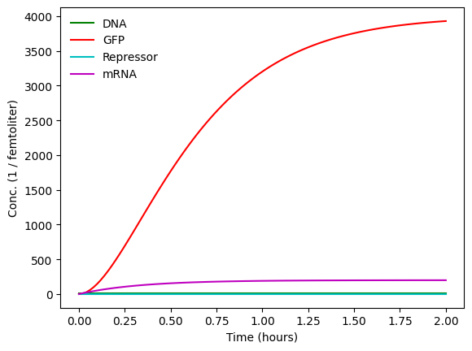
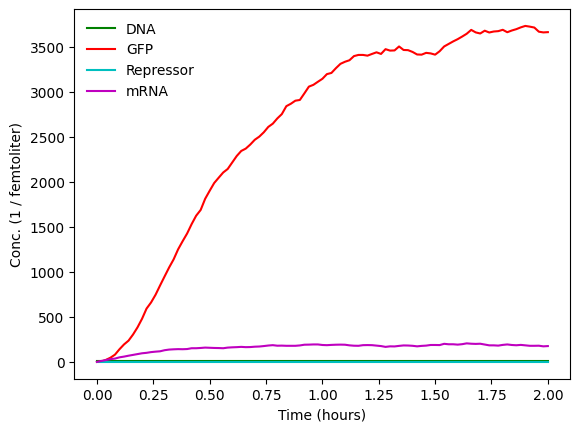
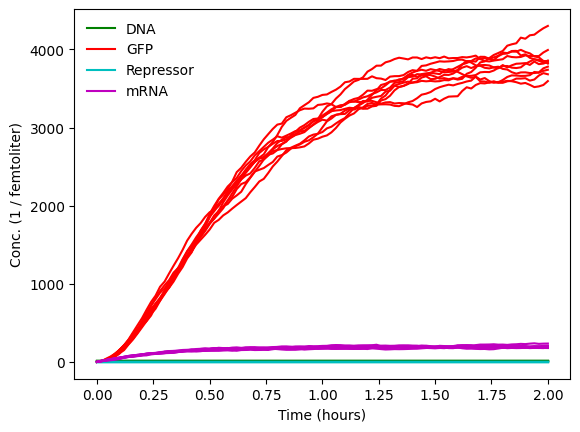
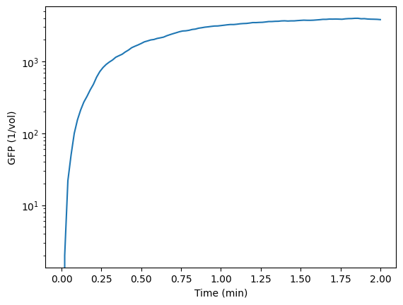
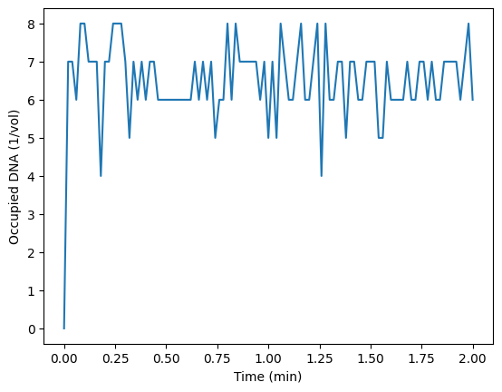
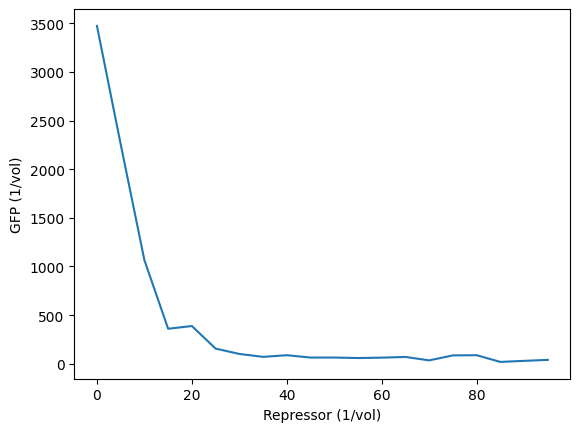
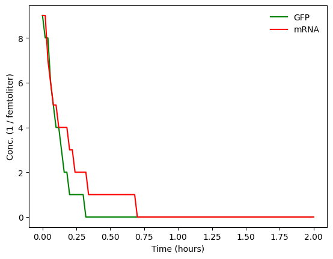
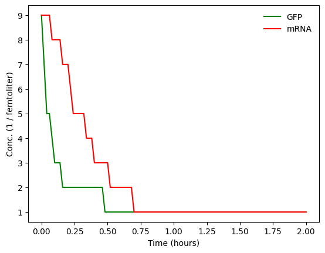
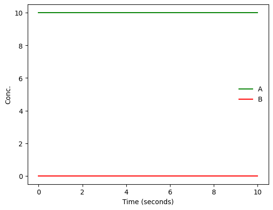

# %pip install mobspyCRN Modeling with MobsPy
This chapter covers:
- The MobsPy simulation framework
- Stochastic simulation of CRNs
- Deterministic simulation of CRNs
MobsPy
MobsPy is a Python-based language to specify, simulate, and analyze CRNs. It follows a modular, object-oriented, approach, where species are grouped into meta-species and reactions into meta-reactions. For an overview see Cravo, Függer, Nowak, Prakash. CMSB. There is also detailed documentation available on readthedocs.io.
While we have already used MobsPy in the Introduction lecture to simulate basic CRNs, this writeup discusses its features in greater detail.
The Python library is available via pypi and github. You can install it by uncommenting and running:
Let’s start by including some basic MobsPy classes and plotting.
from mobspy import BaseSpecies, Simulation, Zero, u, New
import matplotlib.pyplot as pltThe most basic concept is a BaseSpecies. They represent the species within a CRN. Let us start with a simple model of a genetic circuit that has as input a repressor and as output GFP.
Our species are:
- Repressor molecule
- DNA that contains the circuit: each one can be in a
freeandoccupied(by the repressor) state. - mRNA (of GFP sequence)
- GFP
In MobsPy species are automatically named according to the variable names and can be created with a single call. For the moment, we do not specify states of these species.
Repressor, DNA, mRNA, GFP = BaseSpecies()Following a classical CRN, we should have declared two species for DNA, one for it being free and one being occupied. While we could have written Repressor, DNAfree, DNAoccupied, mRNA, GFP = BaseSpecies(), MobsPy has a way to specify these states or characteristics of species which we are going to use. After creating a species one can simply create characteristics of it with:
DNA.free, DNA.occupied(<mobspy.modules.meta_class.Reacting_Species at 0x12c6b6bd0>,
<mobspy.modules.meta_class.Reacting_Species at 0x12b489c10>)Side note: We could have skipped the line since characteristics can be created ‘on the fly’, but for better readability it is good habit to make characteristics explicit for each species.
For all species with non-zero initial values, we need to specify the value. It is good practice to set the volume at this time too. Since, we already know that DNA can be in two states and we want it to be all initially in the free state, we also specify the particular state (also called characteristics) for the initial value.
While MobsPy allows also unitless volumes, counts/concentrations, and rates, it is good practice to specify all with units. The unit registry u that we imported is done for this. It behaves like a pint unit registry, but with some adaptations for MobsPy.
# volume of E. coli
volume = 1 * u.femtoliter
# Let us assume a design on a plasmid with copy number 10
# and all are in free initially
DNA.free(10 / volume)<mobspy.modules.meta_class.Reacting_Species at 0x12c6b4b30>Next let’s describe the reactions and their rates.
Reactions are written as A + ... >> B + ... [rate constant].
For the moment we will use only mass-action kinetics. For ODE semantics this is just the product of all reactant concentrations times a rate constant. This rate constant is specified within [].
# repression
DNA.free + Repressor >> DNA.occupied [1.0 * volume / u.min]
DNA.occupied >> DNA.free + Repressor [1.0 / u.min]
# transcription
DNA.free >> DNA.free + mRNA [1.0 / u.min]
# translation
mRNA >> mRNA + GFP [1.0 / u.min]
# dilution + degradation
mRNA >> Zero [1 / (20 * u.min)]
GFP >> Zero [1 / (20 * u.min)]<mobspy.modules.meta_class.Reactions at 0x138c335f0>Once we are done specifying the CRN, we create a Simulation object with all all the species that are to be simulated specified, separated by the | operator to indicate parallel composition.
Sim = Simulation(DNA | mRNA | Repressor | GFP)
Sim.volume = volume
Sim.unit_y=1 / volume
Sim.run(duration= 2 * u.hour, unit_y=1 / volume, simulation_method="deterministic")
For comparison, we can easily run a stochastic simulation, too.
Sim.run(duration= 2 * u.hour, unit_y=1 / volume, simulation_method="stochastic")
Or multiple ones to observer variations. Remember though from the lecture that these variations are due to the thermodynamics. They do not model noise due to plasmid copy number changes, competing processes, environmental variations, etc.
Sim.run(duration= 2 * u.hour, unit_y=1 / volume, simulation_method="stochastic", repetitions=10)
Most of the time, we would like to do something with the simulation data. To get the results, in this case the first 4 values from repetition 0, we can access them via:
Sim.results["Time"][0][:4], Sim.results["DNA.free"][0][:4]([0.0, 0.02, 0.04, 0.06], [10.0, 10.0, 10.0, 10.0])For example, plotting DNA.free over time in a log plot is done by:
plt.plot(Sim.results["Time"][0], Sim.results["GFP"][0])
plt.gca().set_yscale('log')
plt.xlabel("Time (min)")
plt.ylabel("GFP (1/vol)")Text(0, 0.5, 'GFP (1/vol)')
Whenever you plan to sweep through models and change species, reactions, etc. It is good practice to encapsulate the model in a function.
def repressor_model(repressor_cnt: int = 0, dna_cnt: int = 10) -> Simulation:
Repressor, DNA, mRNA, GFP = BaseSpecies()
DNA.free, DNA.occupied
# volume of E. coli
volume = 1 * u.femtoliter
DNA.free(dna_cnt / volume)
Repressor(repressor_cnt / volume)
# repression
DNA.free + Repressor >> DNA.occupied [1.0 * volume / u.min]
DNA.occupied >> DNA.free + Repressor [1.0 / u.min]
# transcription
DNA.free >> DNA.free + mRNA [1.0 / u.min]
# translation
mRNA >> mRNA + GFP [1.0 / u.min]
# dilution + degradation
mRNA >> Zero [1 / (20 * u.min)]
GFP >> Zero [1 / (20 * u.min)]
Sim = Simulation(DNA | mRNA | Repressor | GFP)
Sim.volume = volume
Sim.unit_y=1 / volume
return Simmodel = repressor_model(10)
model.run(duration= 2 * u.hour, unit_y=1 / volume, simulation_method="stochastic", plot_data=False)
plt.plot(model.results["Time"][0], model.results["DNA.occupied"][0])
plt.xlabel("Time (min)")
plt.ylabel("Occupied DNA (1/vol)")WARNING: The stochastic simulation rounds floats to integers WARNING: The stochastic simulation rounds floats to integers
Text(0, 0.5, 'Occupied DNA (1/vol)')
We are now in the position to plot the input-output characteristic of this repressor.
x: list[float] = []
y: list[float] = []
for repressor_cnt in range(0, 100, 5):
model = repressor_model(repressor_cnt)
duration = 2 * u.hour # NOTE: check to make sure this is really the steady state
model.run(duration=duration, unit_y=1 / volume, simulation_method="stochastic", plot_data=False, level= 0)
x.append(repressor_cnt)
y.append(model.results["GFP"][0][-1]) # NOTE: this only uses 1 stochastic run
plt.plot(x, y)
plt.xlabel('Repressor (1/vol)')
plt.ylabel('GFP (1/vol)')WARNING: The stochastic simulation rounds floats to integers WARNING: The stochastic simulation rounds floats to integers WARNING: The stochastic simulation rounds floats to integers WARNING: The stochastic simulation rounds floats to integers WARNING: The stochastic simulation rounds floats to integers WARNING: The stochastic simulation rounds floats to integers WARNING: The stochastic simulation rounds floats to integers WARNING: The stochastic simulation rounds floats to integers WARNING: The stochastic simulation rounds floats to integers WARNING: The stochastic simulation rounds floats to integers WARNING: The stochastic simulation rounds floats to integers WARNING: The stochastic simulation rounds floats to integers WARNING: The stochastic simulation rounds floats to integers WARNING: The stochastic simulation rounds floats to integers WARNING: The stochastic simulation rounds floats to integers WARNING: The stochastic simulation rounds floats to integers WARNING: The stochastic simulation rounds floats to integers WARNING: The stochastic simulation rounds floats to integers WARNING: The stochastic simulation rounds floats to integers WARNING: The stochastic simulation rounds floats to integers WARNING: The stochastic simulation rounds floats to integers WARNING: The stochastic simulation rounds floats to integers WARNING: The stochastic simulation rounds floats to integers WARNING: The stochastic simulation rounds floats to integers WARNING: The stochastic simulation rounds floats to integers WARNING: The stochastic simulation rounds floats to integers WARNING: The stochastic simulation rounds floats to integers WARNING: The stochastic simulation rounds floats to integers WARNING: The stochastic simulation rounds floats to integers WARNING: The stochastic simulation rounds floats to integers WARNING: The stochastic simulation rounds floats to integers WARNING: The stochastic simulation rounds floats to integers WARNING: The stochastic simulation rounds floats to integers WARNING: The stochastic simulation rounds floats to integers WARNING: The stochastic simulation rounds floats to integers WARNING: The stochastic simulation rounds floats to integers WARNING: The stochastic simulation rounds floats to integers WARNING: The stochastic simulation rounds floats to integers WARNING: The stochastic simulation rounds floats to integers WARNING: The stochastic simulation rounds floats to integers
Text(0, 0.5, 'GFP (1/vol)')
Reaction Rates
Until now we have only used mass-action kinetics and did this by providing a number, the rate constant. Sometimes one needs to deviate from these and
- Let this number be computed by a function.
- Specify the rate function instead of using mass-action kinetics.
Reaction rate constants as functions
To demonstrate the 1st point let us assume that we want to model different degradation rates for mRNA and GFP. We can do this by:
def degradation_rate_constant(d):
if d.is_a(mRNA):
return 1.0 / (20 * u.min)
elif d.is_a(GFP):
return 2.0 / (20 * u.min)
else:
raise NotImplementedError(f"do not know how to degrade '{d}'")
Degrading = BaseSpecies()
Degrading >> Zero [degradation_rate_constant]
mRNA, GFP = New(Degrading)Let’s test it at a simple example of just degrading the two.
mRNA(10 / volume)
GFP(10 / volume)
Sim = Simulation(mRNA | GFP)
Sim.volume = volume
Sim.run(duration= 2 * u.hour, unit_y=1 / volume, simulation_method="stochastic")WARNING: The stochastic simulation rounds floats to integers WARNING: The stochastic simulation rounds floats to integers

Beyond mass-action kinetics
To specify not only reaction rate constants, but the complete reaction rate as a function of the reactant concentrations you can either:
- Use the species in the returned value.
- Return an expression as a
str. This is practical if you want to return a constant rate that is not a reaction rate constant.
For example, instead of the reaction rate \(\gamma \cdot \text{Degrading}\) we want to specify a rate \(\gamma \cdot (\text{Degrading} - 1)\). This will be \(0\), and thus stop degrading, at \(\text{Degrading} = 1\).
We can do this by:
def degradation_rate_constant(d):
if d.is_a(mRNA):
return 1.0 / (20 * u.min) * (d-1)
elif d.is_a(GFP):
return 2.0 / (20 * u.min) * (d-1)
else:
raise NotImplementedError(f"do not know how to degrade '{d}'")
Degrading = BaseSpecies()
Degrading >> Zero [degradation_rate_constant]
mRNA, GFP = New(Degrading)
mRNA(10 / volume)
GFP(10 / volume)
Sim = Simulation(mRNA | GFP)
Sim.volume = volume
Sim.run(duration= 2 * u.hour, unit_y=1 / volume, simulation_method="stochastic")WARNING: The stochastic simulation rounds floats to integers WARNING: The stochastic simulation rounds floats to integers

The following is a quick overview on reaction rate constant vs reaction rate semantics. Uncomment to see the differences.
A, B = BaseSpecies()
A(10)
# All these are mass-action kinetics:
# A >> B [1.0]
# A >> B [1.0 / u.s] # just with units
# A >> B [lambda a: 1.0 / u.s] # careful, still as rate constant
# All these are rate functions:
# A >> B [lambda a: 1.0 / u.s * a] # as before
# A >> B [lambda a: 1.0 / u.s + 0 * a] # different, kind of force as rate
# A >> B [lambda a: str(1.0 / u.s)] # different, force a number as rate
# run
S = Simulation(A | B)
S.duration = 10 * u.s
S.run()
License: © 2025 Matthias Függer and Thomas Nowak. Licensed under CC BY-NC-SA 4.0.